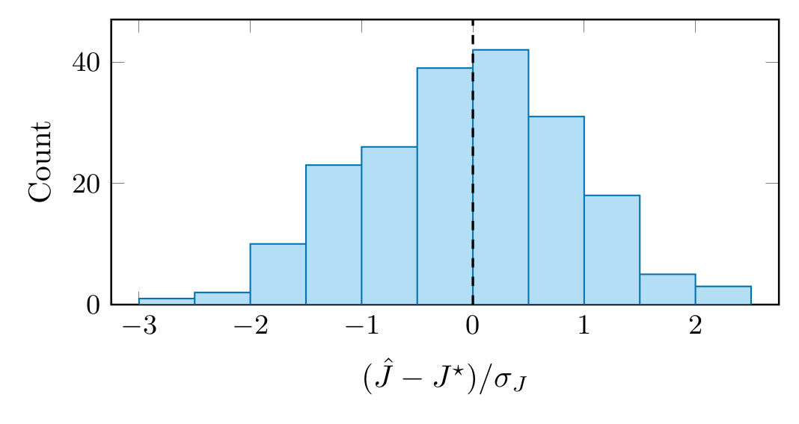
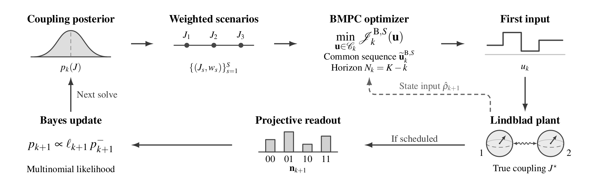
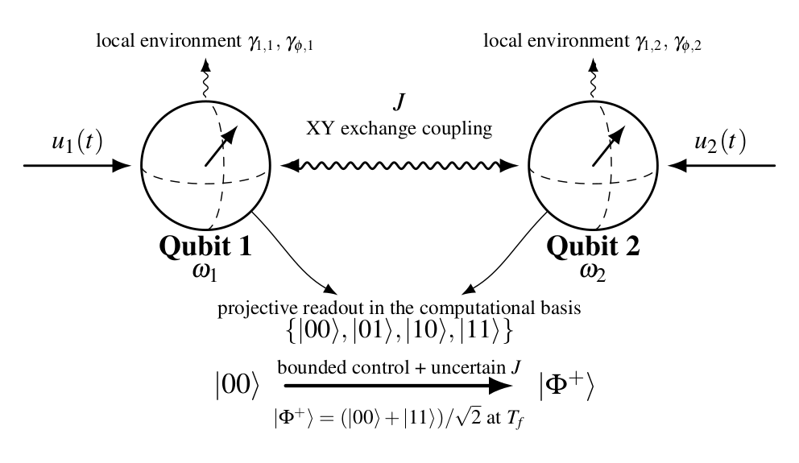
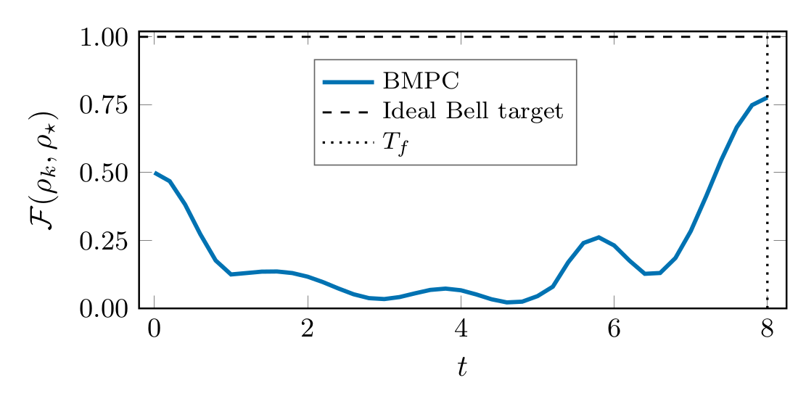
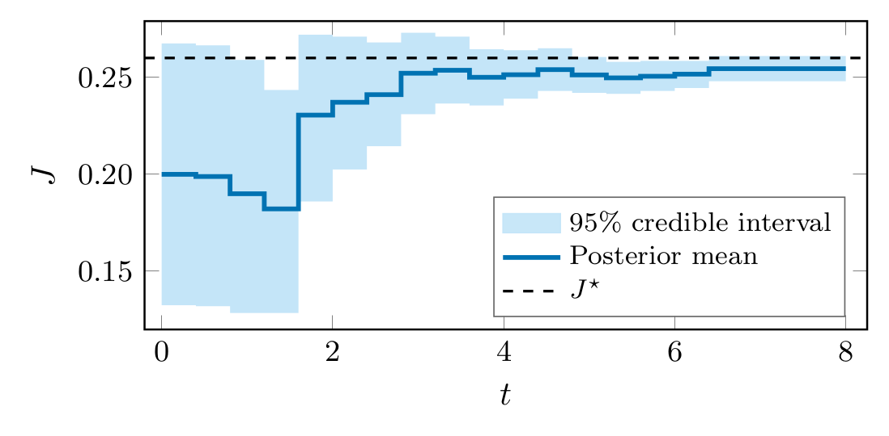
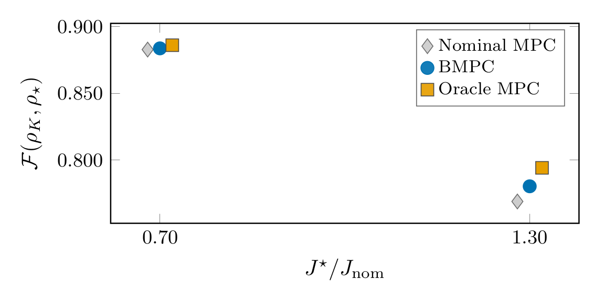
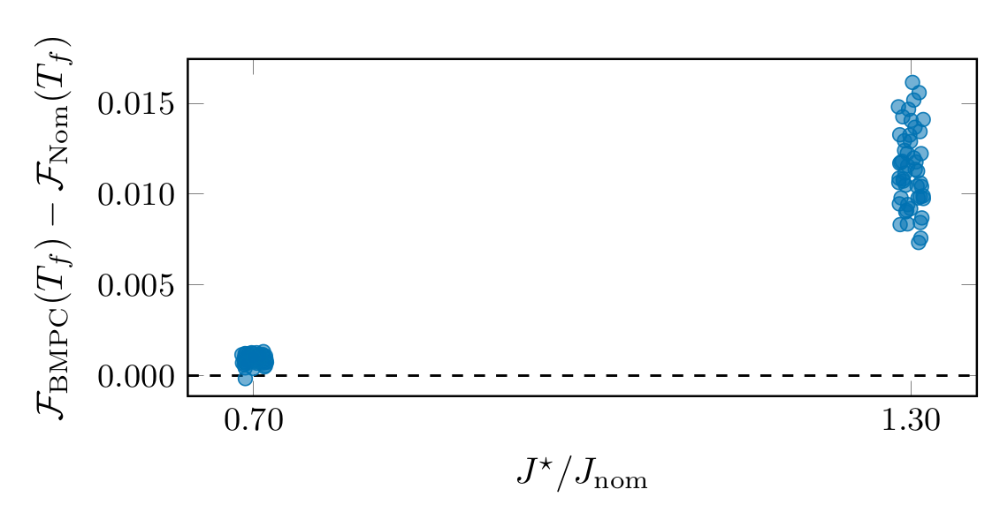
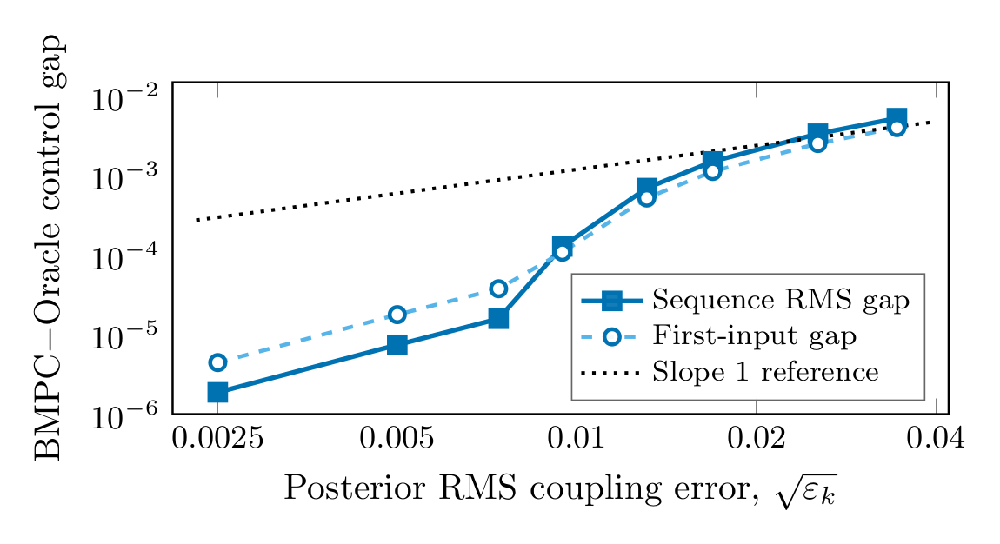

(a) Estimator calibration
Bayesian MPC for Two-Qubit Bell-State Preparation under Decoherence and Exchange-Coupling UncertaintyThanana Nuchkrua, Sudchai Boonto, Xiaoqi Liu, Woraphrut Kornmaneesang Code and data (Julia, .zip) | BibTeX Highlights
 Closed-loop Bayesian MPC. Weighted posterior scenarios define one common control sequence whose first input is applied; scheduled computational-basis shots update the coupling posterior.
AbstractWe formulate Bayesian model predictive control (BMPC) for two-qubit Bell-state preparation by a fixed deadline under Lindblad decoherence and uncertain exchange coupling. Multinomial shot batches update the coupling posterior, and exact interval propagation predicts the response to one bounded control sequence. A trace-distance sensitivity bound limits the excess regularized cost of a globally optimal Bayesian plan relative to a globally optimal known-coupling plan at the same decision instant and state. Under local regularity assumptions, we bound the sequence gap to a local oracle solution, accounting for scenario compression and solver stationarity error. In 50 simulated trials at each of the −30% and +30% coupling mismatches, where terminal fidelities are about 0.88 and 0.78, the mean terminal fidelity gains over nominal MPC are 9.1×10−4 and 1.14×10−2, or 27.8% and 45.1% of the gaps to a numerical oracle. Fixed-prior ensemble MPC recovers −7.0% and 3.9%, while certainty-equivalent MPC at the posterior mean recovers 32.7% and 42.8%. BMPC recovery is higher at a subsequent iteration cap of 16 than at 4 at both mismatches. In a separate fixed-state test, narrower constructed posteriors give smaller computed control gaps. Problem Two qubits with local drives u1, u2, uncertain XY exchange coupling J, local amplitude damping and dephasing, and computational-basis readout. The task is |00⟩ → |Φ+⟩ at the deadline Tf.
Theoretical contributions
Key results
Recovery is the fraction of the oracle–nominal terminal-fidelity gap closed by the controller. BMPC beats nominal MPC in 49/50 and 50/50 trials. The coupling estimator’s root-mean-square error (3.02×10−3) matches the Cramér–Rao bound of the readout protocol (3.21×10−3).  (a) Estimator calibration (b) Representative fidelity (c) Coupling posterior (d) Terminal fidelity (e) Gain over nominal MPC (f) Fixed-state control gapBlue: BMPC; grey: nominal MPC; orange: oracle; black: true values and targets. Code and dataThe archive contains the complete Julia pipeline, the saved outputs behind every table and figure, and the script that draws the figures. One command reruns all experiments: cd julia julia --project=<environment> run_all_audit.jl ground Random seeds: production benchmark 20260920, calibration 20260916, bootstrap 20260921. The included README maps each file to the paper. BibTeX@unpublished{Nuchkrua2026BellBMPC,
author = {Nuchkrua, Thanana and Boonto, Sudchai and Liu, Xiaoqi and Kornmaneesang, Woraphrut},
title = {Bayesian {MPC} for Two-Qubit {Bell}-State Preparation under Decoherence and Exchange-Coupling Uncertainty},
note = {Submitted to IFAC Journal of Systems and Control},
year = {2026}
}
@inproceedings{Nuchkrua2026IFAC,
author = {Nuchkrua, Thanana and Boonto, Sudchai and Liu, Xiaoqi and Kornmaneesang, Woraphrut},
title = {Bayesian Model Predictive Control for Quantum State Regulation under Decoherence},
booktitle = {Preprints of the 23rd IFAC World Congress},
address = {Busan, Republic of Korea},
pages = {3355--3360},
year = {2026}
}
|